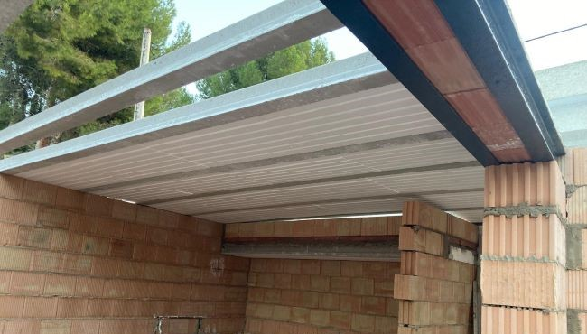
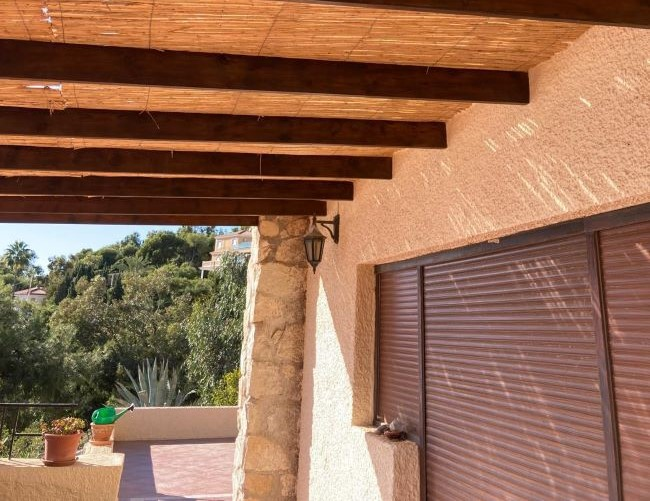
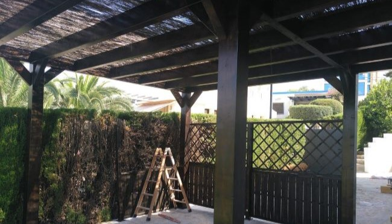
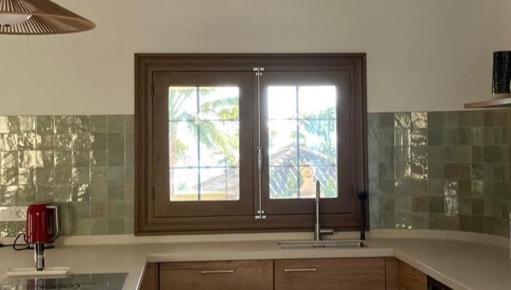

Exteriors
We take care of every detail in the outdoor spaces to make them
functional, safe and visually attractive. We offer a wide range of services ranging
from the construction of porches and stairs to the installation of roofs, windows or
masonry works. We work with resistant materials and professional techniques to ensure
durability and a quality finish. Whether it is a partial renovation or a complete project,
we adapt to your needs to transform the exterior of your home or building.
Masonry
We carry out exterior masonry work resistant and
aesthetically integrated with the environment. We use quality materials
and traditional or modern techniques, depending on the project, to build
walls, fences or decorative elements that are durable and have an impeccable
finish.


Rooftops

We offer installation, repair and maintenance of roofs,
adapting to all types of roofing. We work with high quality waterproof tiles,
panels and systems to ensure protection, insulation and durability against the
weather.

Porch

We build custom porches that bring comfort and style
to your home. We design resistant and customized structures, ideal for
creating areas of shade or rest, always with durable materials and high
quality finishes.

Windows
We install and renovate windows with efficient and aesthetic
solutions. We offer a wide variety of materials and styles, ensuring excellent
thermal and acoustic insulation, as well as professional, clean and accurate
installation.
